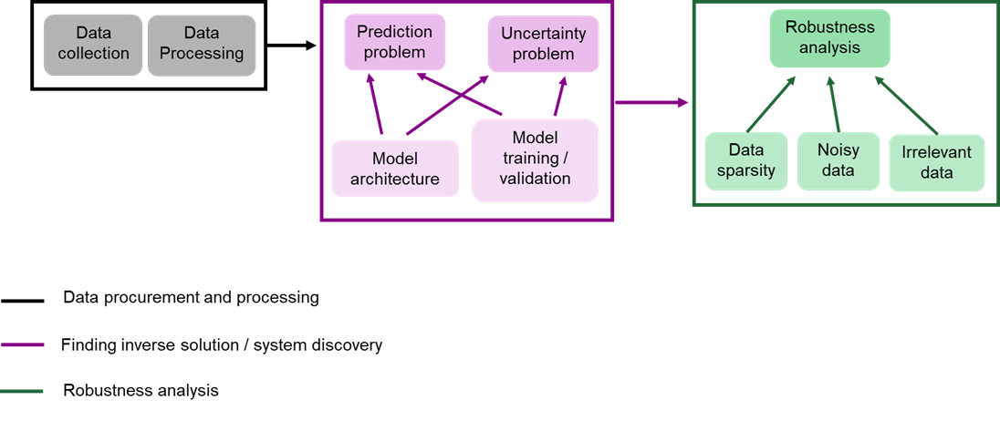
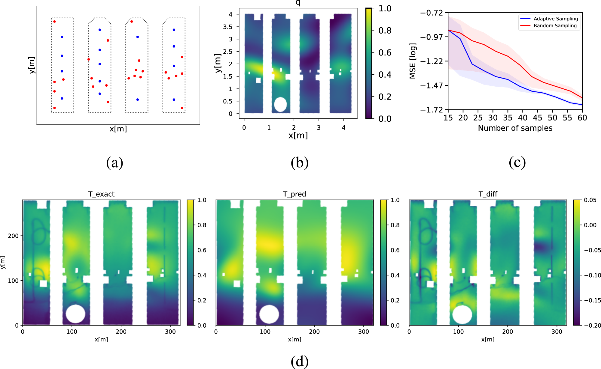
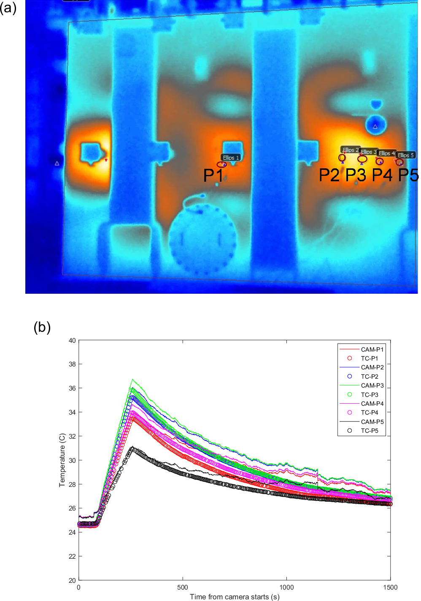
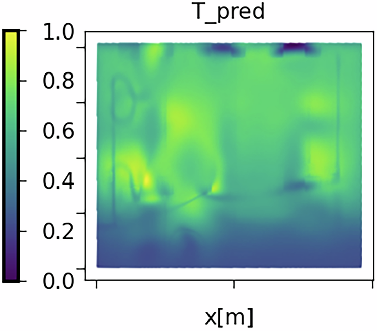
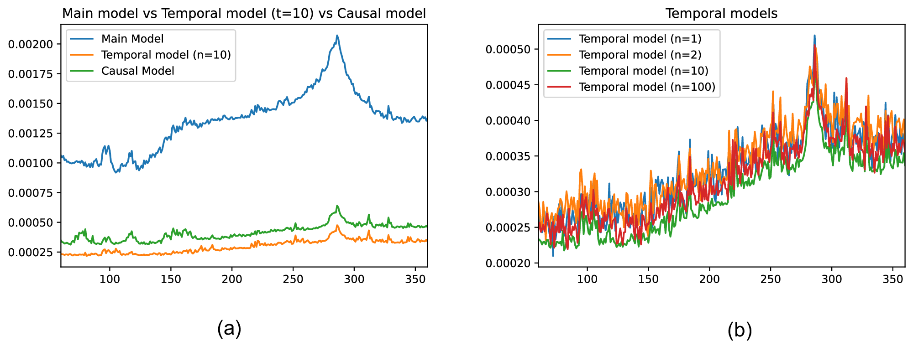
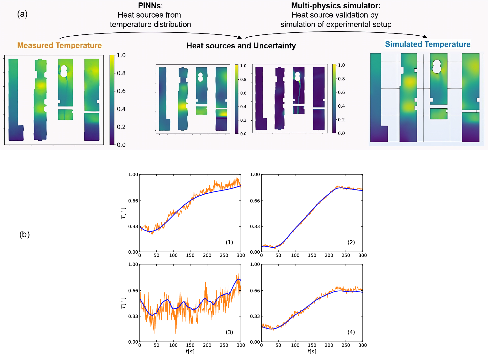

摘要解读
利用科学机器学习实现电气动力系统的端到端鲁棒系统发现
End-to-end robust system discovery in electrical dynamical systems using scientific machine learning
解读更新 2026-09-25 21:06 · 依据公开摘要整理，未核验全文细节
摘要解读已完成，图文文章正在升级。以下保留现有摘要笔记，尚未按图文稿逐项复核。
本文面向电力系统资产管理，研究具有多项式动力学的电气系统发现问题，提出基于物理信息机器学习的端到端逆问题求解方案，并以采样方法应对数据稀疏。摘要报告，在感应电机热建模案例中，相比除一个基线外的其他方法，验证误差降低6%至78%；其概率方案精度不及贝叶斯方法，但计算时间减少86%。研究重点是预测性能与计算成本的权衡，而非生成式设计。以下仅为摘要级解读。[摘要]
研究问题
论文将系统发现置于电力系统资产管理背景，研究对象限定为具有多项式动力学的一类电气系统，目标是求解相关逆问题并增强稀疏数据条件下的预测鲁棒性。原文称其为“electrical dynamical systems with polynomial dynamics”，不能据此扩展至任意动力系统。[摘要]
方法与路线
作者采用物理信息机器学习，提供问题设定与求解方法的理论分析，并介绍确定性及概率方案的模型架构、训练和验证方法，同时提出应对数据稀疏的采样方法。原文使用“Physics-Informed Machine Learning”一词，但摘要未给出网络结构、损失函数或采样规则。[摘要]
创新与比较
解读：摘要呈现的方法特色，是在端到端系统发现方案中结合物理信息学习、确定性与概率建模及稀疏数据采样，而非仅比较单一预测器。作者称其为“end-to-end approach”，但没有充分交代与既有方法的技术差异，尚不能据此确认首创性或各组件的独立贡献。[摘要]
证据与发现
感应电机热建模案例中，该方法相对除一个基线外的其他方法实现验证误差降低6%至78%，原文明确为“all but one baseline”。端到端概率方案的验证误差高于贝叶斯方法，但计算时间减少86%；这些结果支持成本与性能权衡，而非所有指标全面领先。[摘要]
局限与边界
证据局限：摘要仅披露感应电机热建模案例，未给出数据规模、稀疏程度、误差指标定义及重复实验信息，无法判断统计稳定性或跨设备适用性。作者明确研究“一类”多项式动力学系统；这限定了摘要支持的结论范围，但不能据此断言该方法在其他系统上失效。[摘要]
方向关联
解读：系统发现与电力资产管理直接相关，因此对智能运维中的模型辨识具有参考价值；概率方案也可能为可靠性分析提供建模思路，但摘要未证明其不确定性校准能力。给定标签为生成式设计，而摘要未涉及结构生成、设计优化或几何约束，因此与该方向仅有间接的方法联系。[摘要]
后续研究建议
建议：后续阅读全文时，优先核查逆问题中的待辨识变量、物理约束实现、采样策略以及计算时间比较条件，再判断方法能否迁移至目标设备。若用于可靠性或设计研究，可另行检验稀疏观测下的辨识稳定性与概率预测校准；这些是研究建议，不是论文已报告的成果。
阅读建议
建议作为物理信息逆问题求解与智能运维的交叉文献补充阅读；其稀疏数据处理和精度—成本比较值得关注，但与给定生成式设计方向并不直接契合，不宜仅凭主题标签列为核心推荐。[摘要]
原图未改动。以下图注来自标注的来源，不据此补写摘要未报告的实验结论。
已取得的论文原图




原文图注与出处
a Samples found by the active sampling method. b Prediction of local heat distribution using an active sampling method. c Comparison of MSE between adaptive and random sampling strategies. d Measured and predicted temperature distribution using the active sampling method, and their difference.
Chakravorty, Jhelum et al.
原文图页 · CC BY 4.0



原文图注与出处
In this figure, T pred is the predicted temperature distribution on the device’s wall. We observe that the pixels of irrelevant data such as wires on the device wall are suppressed in the prediction and also the underlying continuity in temperature distribution is captured despite the irrelevant data measured from some regions of the wall, as shown by the blue columns in Fig. 3a .
Chakravorty, Jhelum et al.
原文图页 · CC BY 4.0已取得的论文原图




原文图注与出处
a Reconstruction-based validation process. The images are captured at t = 300 s to reflect the spatial distributions. b Comparison of measured (orange curves) and reconstructed (blue curves) temperatures over time. The points (1) [0.35, 0.65], (2) [0.35, 0.3], (3) [0.6, 0.65] and (4) [0.85, 0.65] are shown in Fig. 8 a.
Chakravorty, Jhelum et al.
原文图页 · CC BY 4.0查看公开摘要
System discovery is an important part of the power systems asset management process. In this paper, we introduce an end-to-end approach for robust system discovery for a class of electrical dynamical systems with polynomial dynamics. To that end, we provide a theoretical analysis of the problem setting and the solution approach using a particular Scientific Machine Learning method called Physics-Informed Machine Learning. We introduce model architecture and training and validation methods for deterministic as well as probabilistic approaches to predict the solution to pertinent inverse problems and propose a sampling method to make the predictions robust to data sparsity. With empirical evidence drawn from a case study of thermal modeling of electrical induction machines, we establish the merits of the proposed method and discuss the implications of this research on possible future directions. In particular, we benchmark our proposed end-to-end method with multiple deterministic and probabilistic approaches and show that it outperforms all but one baseline in terms of performance in a range of 6% to 78% reduction of validation error. The drop in performance (increase in validation error) in our end-to-end probabilistic approach compared to a Bayesian approach is compensated by a large reduction (86%) in the computation time, making our method more balanced in terms of performance and cost. The experimental results establish that our end-to-end approach outperforms the baseline methods by demonstrating consistent balancing among performance and computation cost.